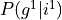
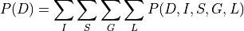
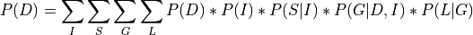
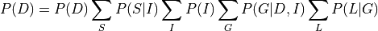

Exact Inference in Graphical Models¶
Inference¶
Inference is same as asking conditional probability questions to the models. So in our student example we might would have liked to know what is the probability of a student getting a good grade given that he is intelligent which is basically equivalent of asking . Inference algorithms deals with efficiently finding these conditional probability queries.
There are two main categories for inference algorithms:
Exact Inference: These algorithms find the exact probability values for our queries.
Approximate Inference: These algorithms try to find approximate values by saving on computation.
Exact Inference¶
There are multiple algorithms for doing exact inference. We will mainly be talking about two very common algorithms in this notebook:
Variable Elimination
Clique Tree Belief Propagation
Variable Elimination¶
The basic concept of variable elimination is same as doing marginalization over Joint Distribution. But variable elimination avoids computing the Joint Distribution by doing marginalization over much smaller factors. So basically if we want to eliminate  from our distribution, then we compute the product of all the factors involving and marginalize over them, thus allowing us to work on much smaller factors. Let’s take the student example to make things more clear:
from our distribution, then we compute the product of all the factors involving and marginalize over them, thus allowing us to work on much smaller factors. Let’s take the student example to make things more clear:



In the above equation we can see that we pushed the summation inside and operated the summation only factors that involved that variable and hence avoiding computing the complete joint distribution.
Let’s now see some code examples:
[1]:
## Add code examples for Variable Elimination
Clique Tree Belief Propagation¶
[ ]: